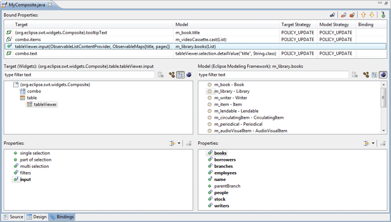
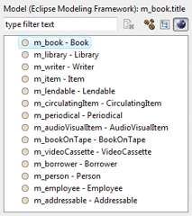
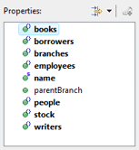
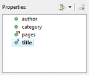
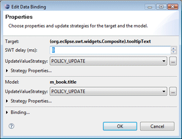
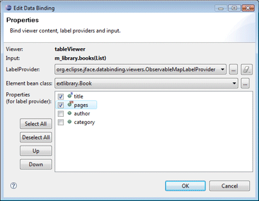
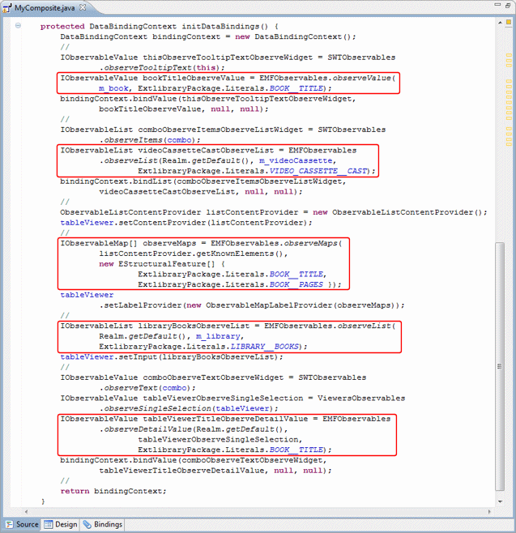

Click the Bindings tab in the editor to created and edit data bindings.

SWT uses simple bindings between targets and models.
In addition to the standard Beans and Widgets bindings, and additional EMF binding type is available when EMF projects/model objects are detected.
Eclipse Modeling Framework (EMF): any EMF model object present in the current compilation unit may be selected.
The filter field above the list can be used to filter the list of models.
The
 clear button can be used to clear the filter and restore the full list.
clear button can be used to clear the filter and restore the full list.

When any Target or Model object is selected, its EMF model properties are shown in the associated Properties list. A drop down filter menu is available to filter the Property list by type. Supported filters are String, Boolean, Numbers, Color and Font.
 
New bindings are created by selecting a Target, a
Target Property, a Source, a Source Property and
clicking the
 Bind button. When creating a binding, the update strategy from
target to model and model to target may be specified as well as
any strategy-specific properties (validators and converters).
Bind button. When creating a binding, the update strategy from
target to model and model to target may be specified as well as
any strategy-specific properties (validators and converters).

When new bindings are created between a Viewer and a list of model objects, the Content Provider and Label Provider may be specified.

As bindings are created or edited on the Bindings tab, the necessary data binding code is generated which may then be seen in the Source view. An initDataBindings() method is created, if it does not already exist and a call to that method is added to the end of the widget creation process.
Within the initDataBindings() method, any needed observables are created first followed by the creation of the Data Binding Context. Simple SWT data bindings are then created using the new context followed by any EMF model bindings that are needed.

Warning: do not edit the initDataBinding() method by hand (without carefully matching the code generation pattern used by the tool) as it will be regenerated in its entirety any time the tool needs to add, remove or update a data binding.